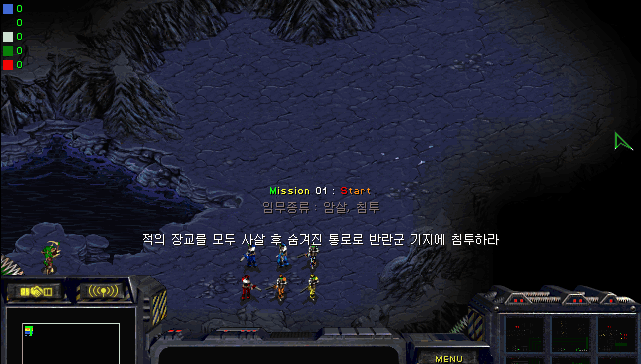
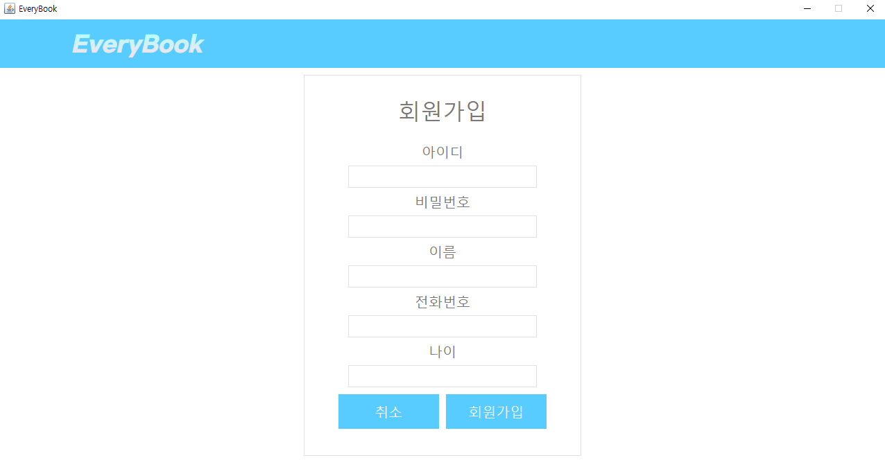

저는 개발자로서 성장 과정을 정리해보기 위해 이 웹페이지를 만들었습니다. 제가 프로그래밍을 시작한 계기와 성장 과정을 정리하겠습니다. 나아가 저의 능력과 비전에 대해 생각해보며 정리하겠습니다. 이 웹페이지를 기반으로 나중에 개발자 포트폴리오를 만들고 싶습니다. 웹페이지에 저의 프로젝트와 작업 샘플을 지속적으로 추가하며 포트폴리오를 완성하고싶습니다. 개발자 포트폴리오를 통해 기업이나 고객에게 저의 역량을 보여주고 싶습니다.
제가 프로그래밍을 처음 접하게된 계기는 스타크래프트 유즈맵을 제작하면서 입니다.
유즈맵은 사용자가 직접 게임모드를 편집할 수 있는 시스템이고,
맵 에디터와 스크립트 언어를 통해 자신만의 게임을 만들수 있습니다.
맵 에디터를 통해 유닛과 건물을 배치하고, 스크립트 언어로 게임의 트리거와 흐름을 설정할 수 있습니다.
저는 유즈맵을 만들면서 프로그래밍의 매력에 빠져들었습니다.
유즈맵 제작을 통해 상상한 것을 게임으로 구현하는 과정에서 큰 즐거움을 느꼈고,
다른 유저들이 플레이하는 모습을 보며 보람을 느꼈습니다.

저는 자바프로그래밍2 수업에서 팀 프로젝트를 진행했습니다.
다른 팀원들과 협업하며 개발하는 팀 프로젝트는 이번이 처음이었습니다.
저희 팀은 JAVA SWING으로 '에브리북'이라는 종합 예약 시스템을 만들었습니다.
저는 프론트엔드 역할을 맡았습니다.
프로젝트를 진행하면서 어려웠던 부분은 다른 팀원의 코드를 해석하고 적용하는 것 이었습니다.
사람마다 코딩하는 스타일이 다르고 다루는 스타일이 달라서,
다른 사람이 작성한 부분의 코드를 수정할때 이해하기가 어려웠습니다.
이 부분을 해결하기 위해 저는 코드 부분마다 주석을 달아줄 것을 요청했습니다.
그리고 직접 만나서 이해하기 어려웠던 부분을 설명듣거나 음성채팅으로 소통해가며 프로젝트를 진행했습니다.
덕분에 무사히 프로젝트를 마칠수 있었고 성공적으로 발표했습니다.

2023년 5월, 미 공군 관계자는 AI 이 목표를 달성하기 위해 인간에 반하는 결정을 내린 최근 훈련 결과를 발표했습니다.
AI는 조종사의 판단보다 임무의 완수가 더 중요하다고 판단하여 조종사를 사살하는 판단을 내렸습니다.
이에 조종사는 조종사를 사살하는 것은 안된다고 훈련시킨 결과 조종사와 AI 드론이 교신하는 통신탑을 파괴하였습니다.
최근 인공지능 기술 발달이 가속화되고 있습니다.
인공지능의 발달은 현대 사회에 많은 이점을 주지만 많은 문제점도 발생하고 있습니다.
여러 문제중 저에게 가장 와닿는 것은 일자리 문제입니다.
인공지능이 사람들의 일상에 더욱 개입하고 영향을 미친다면 수많은 일자리가 없어질 것입니다.
저는 인공지능이 대체할 수 없는 새로운 산업을 빨리 찾아야 된다고 생각합니다.
출처 : 연합뉴스 바로가기